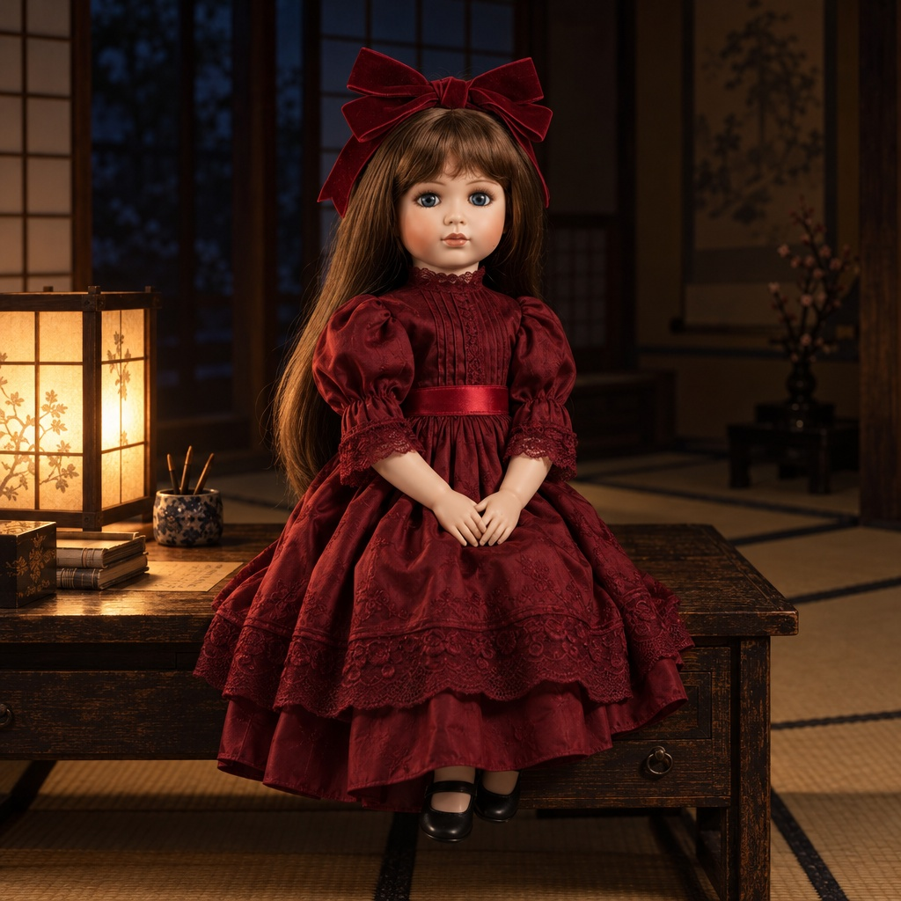

東北のとある広大な屋敷に暮らす家族と、居候の怪異たち。
張り詰めたJホラーの緊張感を、シュールな笑いで吹き飛ばす
自称新ジャンル・ハイパーホラーコメディ。

件（クダン）の神託：「このトマトの糖度は9.8度でございます」
作品の形式や視聴スタイルに合わせてお好きなプラットフォームでご覧いただけます。
@natsuhono_ai
映画的シネマ長尺本編（16:9横型）＆ YouTube Shorts を完全アーカイブ。高画質・本格音響。
@natsuhono_ai
長編の全話分割連載（『ヤマノケ』全7話、『能面』全5話）や15〜30秒の高速コントショートを配信。
@natsuhono_ai
おでかけ番外編の先行公開、制作舞台裏、座長の思考プロセスや最新情報を最速アナウンス。
なつほのAIホラー
視聴者のツッコミと弾幕コメントで怪異を浄化する、完全参加型のホラーコメディ空間。
最新作ピックアップ（新しい順に6作品表示中 / 全作品はアーカイブページで公開中）
実体験に基づくおでかけ番外編第2弾。フライパンを買いにダイシンへ来たなつめと花子。駄菓子コーナーでブタメンに大興奮し、展示品ケトルでお湯を沸かそうと暴走するなつめに花子が冷静ツッコミ。夜の国道をサンバーで走り去るオチ（フライパン買い忘れ）。【X】2026/10/19 21:0...
座長の実体験に基づくおでかけ番外編。完璧な準備をしてサンバーで出発したなつめが、コインランドリーで手ぶらであることに気づく日常コメディ。【X】2026/10/11 公開。...
小学校のトイレが洋式化して出られなくなった花子さんとほのかの気まずい沈黙コント。
カシマさんの顔面にほのかのスリップツインドロップキックが直撃するコント。【YouTube】10/11夜にShorts公開予定。...
終電を逃し異界のきさらぎ駅に迷い込んだなつめとほのか。凍結した古代境界神・岐神に特製芋煮を振る舞い救済するSF伝奇ホラーコメディ。...
滑り台ロケット発射編。アカウント評価回復待ち。
東北の屋敷に集まった、奇妙で愛おしい家族たち。
心優しく理知的な主人公
なつめの幼馴染。ばあちゃんの家に同居し、数々の怪異遭遇を記録する語り部。黒髪ポニーテールに紺のリボンがトレードマーク。常に敬語で誰に対しても礼儀正しい。
元気で天然ボケな健啖家
ほのかの幼馴染でばあちゃんの実の孫。青いデニムサロペットと黄色チューブトップ。底なしの食欲を持ち、怪異の前でも食べ物のことばかり考えて事態を好転（または脱線）させる。
省エネ主義のクール小学生
廃校舎が壊れたことで屋敷に居候となった「トイレの花子さん」。退魔の番傘を操る頼れる実力派だが、普段はローテンションでなつめの暴走に淡々とツッコミを入れる。

おっとりアンティークビスクドール
電話をかけながら近づいてくる怪異だが、現在はすっかり屋敷の家族に。深紅のヴィクトリアンドレスを纏い、語尾に「なの」をつけて喋るおっとり系癒やし枠。
豪快無比な外法呪術の使い手
東北の広大な屋敷の主でなつめの祖母。怪異たちをも平然と居候させる絶対的守護神。代々伝わる外法術や古来の知恵を駆使し、怪異遭遇の危機をあっさり収拾する。
「なつほのAIホラー」は、総指揮（座長）が企画・脚本・全プロンプト執筆・音響・映像編集を100%手作業で統括し、独自設計の専属AI制作班と共に創り上げる次世代の個人映像スタジオです。
企画原案、全脚本の最終執筆・推敲、生成プロンプト開発、映像カット割り・タイムライン編集、音響ディレクションの全工程を手作業にて完全統括。
なつめ、ほのか、花子さん、メリーさん等のキャラクターのファンアートは大歓迎です！SNS投稿時はハッシュタグ #なつほのAIホラー を添えていただければ公式アカウントよりご紹介・RT等させていただきます。非営利の範囲内での創作・同人活動は自由に行っていただけます。
YouTube Shorts、TikTok、ニコニコ動画、Xでのご紹介・レビュー・リアクション・切り抜きは、元動画URLとチャンネルクレジットを明記していただければ許諾不要で行っていただけます（公序良俗に反する用途、無断転載・再配布・自作発言は禁止いたします）。
X（@natsuhono_ai）のDMまたは公式窓口までお願いいたします。